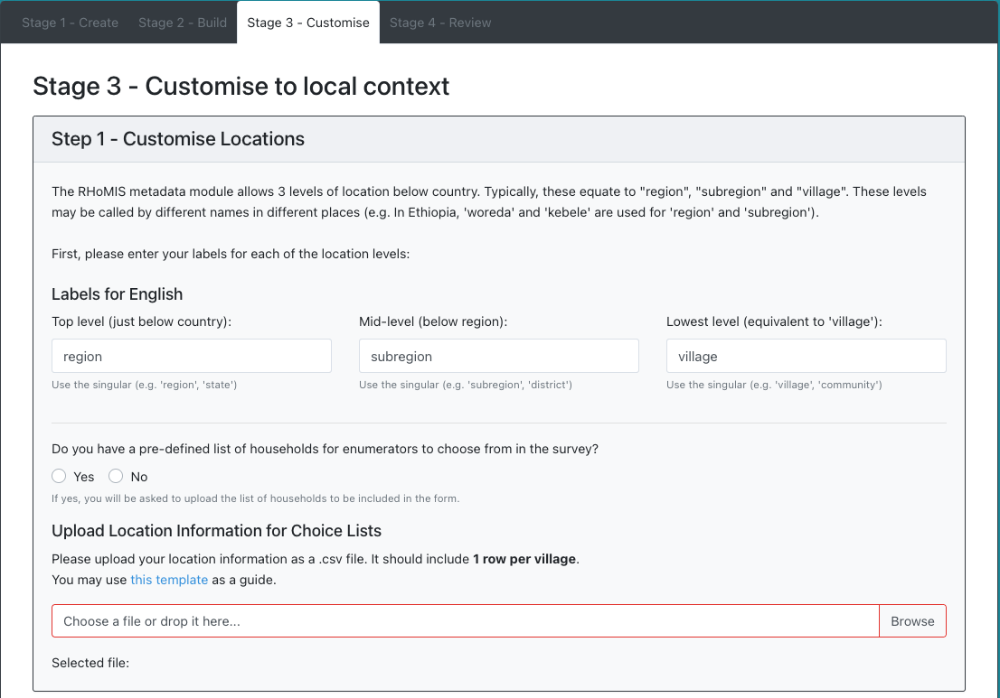

Building a Survey¶
The design of a survey takes place in 4 main stages:
Initialisation: Name your project/questionnaire
Build: Build a survey by selecting predefined modules
Localisation: Selecting choices which are appropriate for the location where you will conduct your survey
Review: Work with and modify your survey, either by testing it with people or by generating synthetic data
1. Initialising your Project¶
When you visit the survey builder, you will see a form which looks like the one below. Here you will enter information on the questionnaire you are building. You will first need to select a project name, a form name, and enter some metadata about how you intend to use the survey. Once you have finished entering the metadata, press “Save and Continue”.
Projects and Forms
Projects and forms are a useful way to organise your questionnaires.
Projects can contain many forms. It can be helpful to store related forms within a project.
Forms are the questionnaires themselves.
2. Designing Your Questionnaire¶
During the questionnaire design, you can select from a set of premade modules. Core modules are preselected for you. Available modules can be added by dragging from “available modules” (on the left), into “selected modules” on the right.
A few things to keep in mind when building a survey:
Keep as many core modules as possible. This will ensure you can calculate core indicators
Try to keep the survey short, this will be less troublesome for the respondent and increase the likelihood of reliable answers
Try to look at the modules in more detail, and see what would be a sensible order to ask the questions. You can view information on the modules, by clicking on them.
Note
It can take a while for the survey to build and save!
3. Localising Your Questionnaire¶
Once you have built your main survey, you can begin localise your questionnaire.
Location Information¶
In each RHoMIS survey there is a metadata module. This collects information on the time and location of the interview. Enumerators need a list of locations to choose from to ensure data quality.
During stage 1 of the customisation you can enter which locations the survey will be conducted. This can be changed at a later date. We offer the ability to include 3 levels of region.
Top level: The administrative level just below country. Here we could select region, state, or county.
Mid level: The administrative level just below the top level. Here we could select subregion or district.
Lowest level: The smallest adminstrative unit in the sample (usually “village”).
Download the location template and begin filling in. the table should look something like this:
country_id |
country_label_en |
country_label_lang2 |
region_id |
region_label_en |
region_label_lang2 |
subregion_id |
subregion_label_en |
subregion_label_lang2 |
village_id |
village_label_en |
village_label_lang2 |
|---|---|---|---|---|---|---|---|---|---|---|---|
ke |
Kenya |
Kenya |
region_1 |
Region 1 |
Region 1 |
subregion_1 |
Subregion 1 |
Subregion 1 |
village_1 |
Village 1 |
Village 1 |
ke |
Kenya |
Kenya |
region_1 |
Region 1 |
Region 1 |
subregion_1 |
Subregion 1 |
Subregion 1 |
village_2 |
Village 2 |
Village 2 |
ke |
Kenya |
Kenya |
region_1 |
Region 1 |
Region 1 |
subregion_2 |
Subregion 2 |
Subregion 2 |
village_3 |
Village 3 |
Village 3 |
Once you have filled it in, you will see an option to upload your location lists.
Choice Localisation¶
You will need to verify several multiple choice options. For each list, there are predefined options which have occure frequently in RHoMIS surveys. For example, with “crop_sale_price_quantityunits”, common options include “total_income_per_year”, “price_per_kg”, “price_ber_bag_50kg”, and “price_per_tonne”.
crop_list: The list of crops grown
livestock_list: The list of livestock kept
cropyield_units: Common units in kg for the amount of crop harvested per year (e.g. sacks_10kg)
crop_sale_price_quantityunits: Common units for crops sold (e.g. are crops often sold by sack, by box. If so, how much do these sacks roughly weigh?)
offfarm_incomes: What sources of off-farm income are common
fert_units: Common units for fertiliser (kg)
milk_units: Common units form milk (litres)
Warning
Only add customised elements after selecting some of the default options
4. Reviewing Your Questionnaire¶
To review your survey we suggest collecting some draft data. By collecting draft data, you will be able to see how the survey flows and what the results will look like.
At any point, modify your form by returning to the home page. Select “Manage Existing Projects”. Select your project, select your form, and under options select “edit form”.
Once you are happy with your form, you can finalise, and begin collecting “real” data.
Warning
Once your form it is built it will be saved as a draft. This allows you to collect mock data, and see what that data will look like.
Once you are happy with your form you can finalise it. Finalising a form locks it in place, but will also delete draft entries.